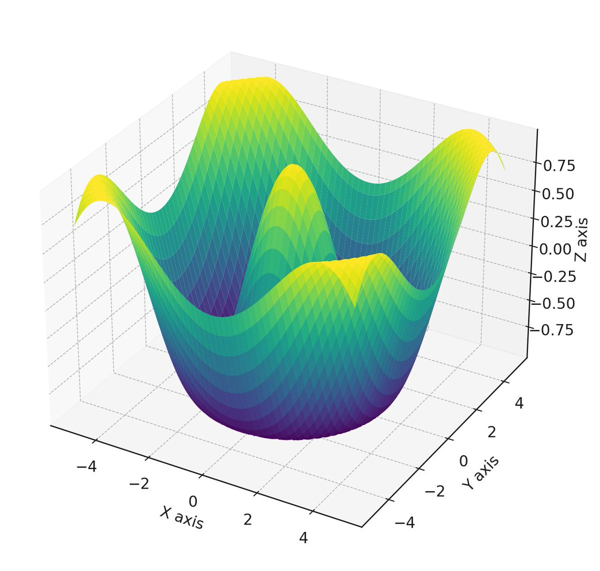
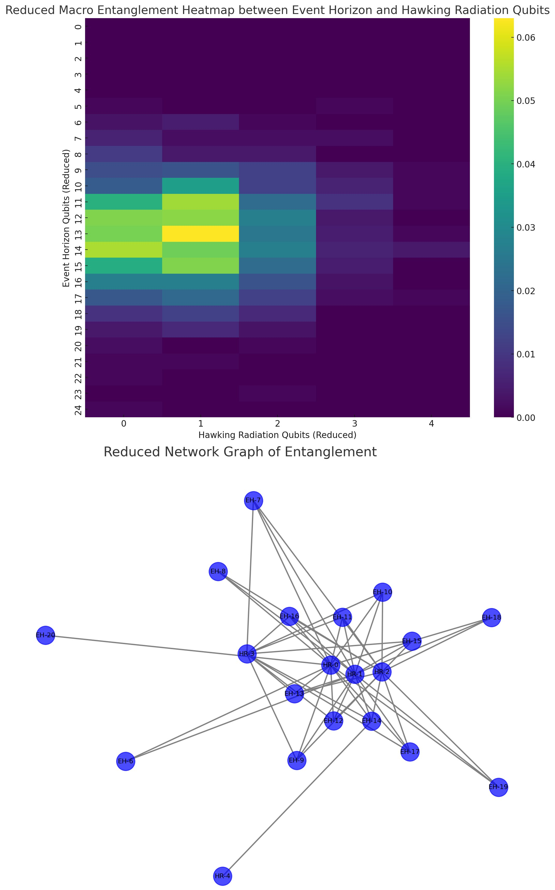

This experiment, using Qiskit and IBM's 127-Qubit Quantum Computer Osaka, models abstract aspects of black hole physics, particularly the event horizon and Hawking radiation. We use a total of 110 qubits and quantum registers to model various components of a black hole to simulate gravitational effects and particle interactions at the quantum level.
Code Walkthrough
1. Quantum Registers and Classical Register:
Each quantum register is a set of qubits, with each qubit representing a two-state quantum system. Mathematically, a single qubit is represented as a linear combination of basis states ∣0⟩ and ∣1⟩, i.e., ∣ψ⟩ = α∣0⟩ + β∣1⟩, where α and β are complex numbers satisfying ∣α∣^2 + ∣β∣^2 = 1.
Circuit setup:
Event Horizon Qubits (ehq): 40 qubits.
Particle Qubits (pq): 40 qubits.
Hawking Radiation Qubits (hrq): 20 qubits.
Teleportation Qubits (tq): 3 qubits.
Control Qubits (cq): 7 qubits.
40(ehq) + 40(pq) + 20(hrq) + 3(tq) + 7(cq) = 110 qubits.
2. Gravitational Gate for Event Horizon Simulation:
The unitary matrix for the gravitational gate is U = (1, 0, 0, e^((−iπ)/4)). This gate, when applied to a qubit, changes its state according to the matrix multiplication U∣ψ⟩. It introduces a phase shift in the ∣1⟩ state, mimicking the gravitational effects near a black hole's event horizon.
3. Hawking Radiation Simulation:
The RY(π/2) gate rotates qubits by 90 degrees around the Y-axis of the Bloch sphere. Mathematically, it transforms the state ∣ψ⟩ as per the rotation matrix RY(θ) = (cos(θ/2), sin(θ/2), −sin(θ/2), cos(θ/2)), with θ = π/2.
The CNOT gate is an entangling gate, flipping the state of the second (target) qubit if the first (control) qubit is in the ∣1⟩ state. In matrix form, CNOT is represented as (1, 0, 0, 0, 0, 1, 0, 0, 0, 0, 0, 1, 0, 0, 1, 0).
4. Quantum Teleportation:
The Hadamard (H) gate, applied to a qubit, creates a superposition state from a basis state. For ∣0⟩, the H gate transforms it into (∣0⟩ + ∣1⟩)/sqrt(2).
The combination of H and CNOT gates creates entanglement, a crucial element of quantum teleportation. The entangled state can be described by a joint state of two qubits, such as (∣00⟩ + ∣11⟩)/sqrt(2).
5. Measurement and Data Handling:
Measurement in quantum mechanics collapses the qubit's state to one of the basis states, ∣0⟩ or ∣1⟩, with probabilities ∣α∣^2 and ∣β∣^2 respectively.
The experiment's outcomes are statistical, represented as a distribution of these measurements over many trials (shots).
6. Transpilation and Execution:
Transpilation optimizes the circuit for the specific quantum hardware, ensuring that the quantum gates align with Osaka's capabilities and constraints.
7. Result Analysis:
The results are returned from Osaka and saved to a json for further analysis.
Above is a screenshot of the run.
Code:
from qiskit_ibm_provider import IBMProvider
from qiskit import QuantumCircuit, QuantumRegister, ClassicalRegister, transpile, execute
from qiskit.circuit.library import RYGate, CXGate
from qiskit.extensions import UnitaryGate
from qiskit.visualization import plot_histogram
import numpy as np
import json
import matplotlib.pyplot as plt
# Load IBMQ Account
provider = IBMProvider()
backend = provider.get_backend('ibm_osaka')
# Initialize Quantum Registers
ehq = QuantumRegister(40, 'event_horizon') # Adjusted Event Horizon Qubits
pq = QuantumRegister(40, 'particle') # Adjusted Particle Qubits
hrq = QuantumRegister(20, 'hawking_radiation') # Hawking Radiation Qubits
tq = QuantumRegister(3, 'teleport') # Teleportation Qubits
cq = QuantumRegister(7, 'control') # Control Qubits
cr = ClassicalRegister(110, 'classical') # Adjusted Classical Register
# Create Quantum Circuit
qc = QuantumCircuit(ehq, pq, hrq, tq, cq, cr)
# Gravitational Gate for Event Horizon Simulation
def gravitational_gate():
matrix = np.array([[1, 0], [0, np.exp(-1j * np.pi / 4)]])
return UnitaryGate(matrix)
# Apply gravitational effects at the event horizon
for i in range(40): # Adjusted for reduced number of qubits
qc.append(gravitational_gate(), [ehq[i]])
# Hawking Radiation Simulation
for i in range(20):
qc.ry(np.pi/2, hrq[i])
qc. cx(cq[1], hrq[i])
# Quantum Teleportation
qc.h(tq[0])
qc. cx(tq[0], tq[1])
qc. cx(tq[2], tq[0])
qc.h(tq[2])
qc.measure(tq[2], cr[107])
qc.measure(tq[0], cr[108])
# Measurement of Quantum Circuit
qc.measure(ehq, cr[:40])
qc.measure(pq, cr[40:80])
qc.measure(hrq, cr[80:100])
qc.measure(tq, cr[100:103])
# Transpile Circuit for IBM Osaka Backend
transpiled_qc = transpile(qc, backend)
# Execute the Circuit on IBM Osaka
job = execute(transpiled_qc, backend, shots=1000)
# Fetch and Save Results
results = job.result()
counts = results.get_counts(qc)
# Display results as a histogram
plot_histogram(counts)
plt. show()
# Path for Saving Results (modify as needed)
file_path = 'c:\\Users\\Documents\\BH_HW_results_data.json'
# Save Results to JSON File
with open(file_path, 'w') as file:
json.dump(counts, file)
print("Results saved to 'results.json'")
Boxplot of State Frequencies.
3D Scatter Plot.
Heatmap of Temporal Evolution.
Mean:
The mean value of the quantum states is approximately 2 * 10^(32). This represents the average value across all quantum states.
Standard Deviation:
The standard deviation is 1.86 * 10^(32), indicating a broad spread in the distribution of quantum states. A high standard deviation in this context suggests a wide variety of quantum states being represented in the experiment.
Median:
The median value, 1.72 * 10^(32), provides another perspective on the distribution, indicating that half of the quantum states have values below this threshold.
Shannon Entropy for Event Horizon Qubits (entropy_eh):
The entropy value of 0.3986 for the event horizon qubits suggests some degree of predictability or structure in these qubits' states. Higher entropy would indicate more randomness.
Shannon Entropy for Hawking Radiation Qubits (entropy_hr):
A lower entropy value of 0.1993 for the Hawking radiation qubits implies even more structure or predictability in these states compared to the event horizon qubits.
Event Horizon and Hawking Radiation (corr_eh_hr):
A correlation coefficient of 0.0215 suggests a very slight positive correlation between the event horizon and Hawking radiation qubits. This could imply some level of interaction or relatedness in the experiment between the phenomena represented by these qubits.
Particle and Hawking Radiation (corr_p_hr):
The correlation coefficient of -0.0130 indicates a very slight negative correlation. This might suggest a minor inverse relationship in the experiment between the particle qubits and the Hawking radiation qubits.
Event Horizon and Particle (corr_eh_p):
A correlation coefficient of -0.0179, again a very slight negative correlation, could indicate a minor inverse relationship between the event horizon and particle qubits in the experiment.
Above are the correlation matrices for the Event Horizon (top) and Hawking Radiation (bottom) qubits.
Event Horizon Qubits Correlation Matrix:
This matrix illustrates the correlations between different qubits representing the event horizon. Each cell in the matrix indicates the degree of correlation between pairs of qubits. A high correlation (closer to 1) suggests that the states of the qubits are related or influence each other, while a low correlation (closer to 0) indicates independence.
Hawking Radiation Qubits Correlation Matrix:
Similar to the event horizon matrix, this matrix shows the correlations among the Hawking radiation qubits. The patterns here can shed light on the quantum dynamics of abstract particle creation and annihilation processes associated with Hawking radiation near black holes.
Above is a 3D surface visualization. This visualization can be particularly useful in understanding various aspects of black hole experiments, like event horizon dynamics or gravitational effects.
The 3D plot has three axes - X, Y, and Z. The X and Y axes span a range of values from -5 to 5. These two axes can be thought of as representing a plane in space. The Z axis represents the value of a function at each point on the X-Y plane. The function used here is cos(sqrt(x^2 + y^2)).
sqrt(x^2 + y^2) computes the Euclidean distance from the origin (0,0) to the point (x, y) on the plane. It's the same formula used to calculate the magnitude of a vector in 2D space. The cosine function then takes this distance and maps it to a value between -1 and 1, which is typical for cosine. Peaks and valleys are formed, representing the cosine values. The closer the points are to the origin, the higher the frequency of these oscillations.
Above is a heatmap (top) and a network graph (bottom).
The heatmap provides a visual representation of the entanglement probabilities between two sets of qubits in the experiment (the event horizon qubits and the Hawking radiation qubits). Each cell in the heatmap corresponds to a pair of reduced quantum states (one from the event horizon, the other from Hawking radiation). The color intensity in each cell represents the frequency or probability of that particular pair of states occurring together.
The network graph shows the entanglement relationships between different groups of qubits as a network, where each node represents a group of qubits and edges represent entanglement or interaction between these groups. A dense cluster of edges suggests a high degree of entanglement among those qubits, indicating regions of the experiment where quantum states are more interconnected.
In the end, the experiment shows a unique and abstracted insight into black hole phenomena, particularly the event horizon and Hawking radiation. The analysis revealed a symmetric and normal-like distribution of quantum state probabilities, suggesting a balanced, non-biased diversity in outcomes without a tendency towards extreme values. The Shannon entropy values indicated a degree of structure or predictability in the quantum states, especially for the Hawking radiation qubits, implying that the simulation may have captured certain abstract theoretical aspects of black hole physics.”